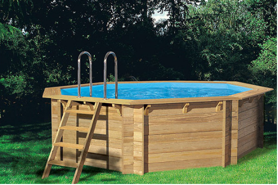
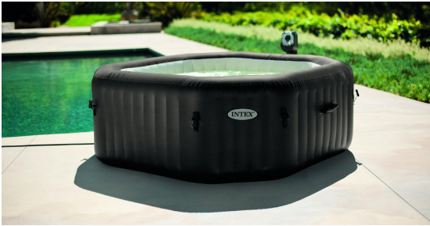

belle piscine
Piscine bois octogonale Woodfirst
Une piscine bois toute équipée, prête à être montée dans votre jardin, et au meilleur rapport qualité prix, c'est possible avec les piscines Woodfirst ! Octogonale, allongée, à installer hors-sol, semi-enterrée ou enterrée, la piscine bois Woodfirst est disponible en plusieurs dimensions et profondeurs pour s'adapter au mieux à vos besoins !
PURE SPA GONFLABLE PAR INTEX
La vie actuelle engendre un stress qui demande à être évacué. Le spa est un moyen idéal de se détendre : plongez dans une eau idéalement chauffée, et profitez de bulles ou de jets qui contribueront à vous délasser après une journée difficile au bureau ! Avec le Pure Spa , décliné en 6 modèles, Intex met le bien-être à la portée du plus grand nombre. Gonflable, transportable, facile à mettre en place et à ranger, il vous est proposé avec une série d'équipements qui ne feront qu'agrémenter cette expérience relaxante ! Un luxe à prix doux, qui ravira petits et grands ! En solo, à deux ou en famille, à vous de choisir : le Pure Spa accueille jusqu'à 6 personne